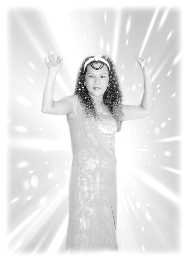

| Maître dit |
Le Cap, Afrique du Sud, 28 novembre 1999 (Initialement en anglais) |
 Quand on vous parle de l'Afrique, on vous parle de transpiration, d'un soleil qui dessèche, qui brunit la peau en un rien de temps, des lions qui courent ça et là et tout ça, mais c'est vraiment très beau. Votre pays s'est développé si vite et d'une manière si impressionnante. Quand nous avons traversé la ville en voiture, je croyais être à New York ou à Los Angeles. Maintenant vous savez pourquoi je vous ai fait venir ici, pour que vous ne soyez plus effrayés par les légendes africaines. Elles font une drôle de publicité à votre pays. Nous voyons toujours la jungle, les lions et Tarzan, dans tous les films tournés en Afrique. C'est très agréable. Je suis déjà venue en Afrique et les pays où j'étais m'ont beaucoup surpris aussi. Mais celui-ci me surprend encore plus. L'Afrique du Sud est vraiment moderne, trop moderne. Bon, au moins ici il y a une mini-jungle afin que ceux d'entre vous qui s'attendaient à ce que l'Afrique soit une jungle, ne soient pas trop déçus.
Ici c'est frais et beau. L'oxygène des arbres vous aidera à vous sentir bien et à embellir votre peau. J'ai rajeuni aujourd'hui. [Applaudissements]. Nous pourrions vivre éternellement dans ce corps physique. Oui, d'un point de vue pratique nous le pourrions, parce que Dieu a fait ce corps physique pour durer très longtemps, et même éternellement. Mais nous abîmons notre environnement, et nous abîmons notre corps en travaillant trop, en l'empoisonnant avec toutes sortes de produits toxiques, nous l'épuisons par des activités inutiles et incessantes et usons notre mental avec toutes sortes de schématisations et de plans absurdes et de pensées négatives. Quand vous respirez un si bon air dans un environnement si bon, avec beaucoup d'arbres et les arbres génèrent de l'oxygène, alors vous sentez que votre peau est plus belle. Regardez-vous. La peau a l'air plus jeune, plus lisse et les pores sont plus propres, la peau est plus fine et les rides disparaissent. Vous vous sentez mieux ici, plus frais, revigoré et plein d'énergie et la peau paraît plus lisse, plus jeune et vous vous sentez bien. Vous vous sentez comme si vous sortiez du bain ou comme si vous aviez pris une boisson tonique ou un élixir, quelque chose comme cela. Rien qu'avec tout ça vous vous sentez bien et si vous méditez, bien sûr, vous vous sentirez encore mieux.
Nous pourrions vivre pour toujours dans ce corps physique et dans ce monde physique. C'est pour cela que, dans les vieilles histoires qu'on lit, on entend dire que certaines personnes ont vécu jusqu'à l'âge de 800 ans, d'autres plus longtemps, d'autres moins. Comme Peng Tzuu en Chine qui a vécu 400 ou 500 ans. Cela arrive encore à certaines personnes dans certains coins perdus de la terre où il n'y a pas de contamination ni de pollution dans l'air. Elles mènent une vie et une manière de vivre simples. Chaque jour est sans surprise ni stress, leurs besoins sont minimes et leur contentement très grand, ce qui fait qu'elles vivent plus ou moins dans un monde paradisiaque tout en étant dans leur corps physique et ainsi elles vivent plus longtemps. Certaines personnes qui vivent dans les régions reculées de l'Himalaya vivent encore quatre ou cinq cents ans, il y en a très peu, mais elles existent. Et même dans nos pays, dans des lieux tout à fait courants et ordinaires, on peut lire parfois dans les journaux que certaines personnes vivent jusqu'à 200 ans. Oui, il existe des êtres exceptionnels qui vivent aussi longtemps que ça.
Ma grand-mère, la mère de mon père, a vécu au-delà de 100 ans. Elle avait 105 ans, et était en bonne santé quand elle est morte. Elle était encore forte quand elle a quitté ce monde. Quand elle a eu 100 ans, ils l'ont prise en photo et me l'ont donnée. Elle portait de beaux vêtements, comme une robe de lama. Elle était si belle et avait un sourire si éclatant. Je me rappelle que sa vie était très simple et qu'elle a eu treize enfants, incroyable n'est-ce pas ? Ma grand-mère était gentille, mais mon grand-père, on m'a dit qu'il était un grand mais grand papillon. Il aimait les fleurs, les fleurs mobiles, qui courent partout, aussi il est fort probable que j'ai plus de cousins et cousines que je ne pourrais jamais en connaître. Il était officier supérieur ou gouverneur de province (j'ai oublié de vérifier) aussi beaucoup de gens l'aimaient, particulièrement les femmes. Autrefois, si on était l'épouse ou la maîtresse de quelqu'un comme un officier supérieur ou un officiel important du gouvernement alors on était "quelqu'un", et très prestigieux, alors bien sûr, on ne peut pas le condamner. Ce n'est pas qu'il le voulait, elles étaient volontaires. Autrefois, si l'on avait plusieurs femmes, ça allait. C'était une tradition différente de celle d'aujourd'hui. Autrefois il y avait le régime matriarcal, comme c'est encore le cas chez les Zoulous. Est-ce que vous avez toujours ce système (l'auditoire : le peuple traditionnel) Le peuple traditionnel est toujours matriarcal. Est-ce que beaucoup de gens sont traditionnels ? (l'auditoire : non) Non, ils se sont modernisés maintenant, ils sont devenus un peuple patriarcal. C'est dommage, c'est la plus grosse erreur qu'ils ont fait, vraiment. J'avais espéré que dans certaines parties de la terre, il y ait encore des peuples qui soient restés sous le régime matriarcal, parce que c'est le meilleur système que vous puissiez avoir pour votre planète.
Dans les temps anciens, il y avait partout ce système. Les femmes étaient responsables de tout. Elles s'occupaient des affaires de l'état, elles prenaient les décisions importantes pour le pays, elles prenaient toutes décisions pour tout ce qui concerne la maison, toutes les grandes décisions vis à vis des enfants et de la famille. Et le mari flânait et aidait, il aidait à produire les bébés. Autrefois, c'était votre travail (Maître s'adresse aux disciples masculins) ne faire que la pollinisation, la fertilisation, multiplier la race des êtres humains.
Plus tard, des milliers d'années plus tard, vous êtes devenus plus sages, pas vraiment plus sages, mais vous avez appris de vos femmes, des femmes intelligentes, comment gouverner, comment se concentrer sur les choses à portée de main, et comment mener les affaires d'états. Je ne veux pas vous offenser, les gars ! Ne soyez pas en colère après moi ! Je ne fais que vous raconter des faits historiques. Je suis très consciente de la fragilité de votre ego masculin. J'essaie seulement de vous donner une information purement objective sur ce que vous connaissez. Si vous lisez des livres d'histoire, vous saurez que ce que je dis est vrai.
Je ne connais pas votre culture, ni la culture européenne, mais dans ma culture, la culture aulacienne, autrefois c'était les femmes qui étaient responsables. Je crois qu'il existe des pays éparpillés dans le monde qui ont encore ce système de gouvernement, comme au Tibet, ils ont toujours un régime matriarcal et ici dans votre pays, certaines tribus Zoulou traditionnelles sont encore matriarcales, et c'est bien. Si vous étudiez le système génétique des hommes et des femmes, le comportement des hommes et des femmes et la façon dont les hommes et les femmes s'occupent des choses, vous comprendrez pourquoi. Les femmes sont plus délicates, plus attentives aux détails, et quoi qu'elles fassent, elles le font d'une façon plus correcte, plus raffinée et avec le soucis des détails. C'est pour cela que Dieu a confié aux femmes la tâche la plus grande, la plus noble, celle d'être mère. C'est un travail très difficile. Si les hommes devaient porter un enfant pendant neuf mois, je ne sais pas s'ils pourraient le supporter. C'est un travail très difficile d'élever des enfants.
Aussi, autrefois, il y avait ce système où les femmes s'occupaient de tout ce qui touchait au confort matériel de toute la famille et de l'état et les hommes faisaient les travaux physiques, comme d'aider les femmes dans les travaux lourds, tout ce qui demande des muscles et de la force. Les hommes sont capables de cela, c'est pourquoi on peut voir que les hommes se sont toujours plus développés. Génétiquement parlant, ils ont toujours été plus forts que les femmes, plus grands et plus musclés, et les femmes ont toujours été plus délicates, plus raffinées, plus attentives et plus concentrées dans tout ce qu'elles font. Il y a même un proverbe aujourd'hui qui entérine cela : "Derrière chaque grand homme, il y a toujours une grande femme." Même maintenant. [Applaudissements]
Il y a longtemps, les hommes et les femmes étaient très contents de vivre côte à côte, faisant tout ce qui leur venait naturellement. Par exemple, les femmes qui sont plus délicates et cérébrales s'occupaient des sujets intellectuels et les hommes qui sont plus musculaires, plus forts et protecteurs s'occupaient des tâches correspondantes. Ils avaient aussi le pouvoir de fertiliser les ovules des femmes, et ainsi ils travaillaient ensemble en bonne entente et il n'y avait aucun problème. Le monde avait une meilleure allure. Non seulement d'un point de vue matériel, mais aussi spirituel et émotionnel. Le monde était à cette époque un meilleur endroit pour vivre, car les femmes le dirigeaient avec plus de bon sens et d'amour. Les femmes étaient les symboles de l'amour, et elles le sont toujours. C'est pourquoi on a écrit des milliers de chansons au nom de la mère et rarement au nom du père. Et toutes les chansons sur la guerre qui encouragent les soldats à marcher vers la mort sont toutes écrites pour les hommes. La plupart des guerres ont été déclenchées par des hommes. Nous avons eu des guerres lorsque les hommes se sont mis à diriger le monde. Si vous revenez en arrière dans l'histoire vous verrez que je ne me trompe pas. Attention, je ne dis pas cela pour regarder de haut les hommes ni rien de ce genre. Les hommes d'aujourd'hui sont différents, je suis en train de dire comment les choses ont changé pendant toute cette période de l'histoire et ont changé notre monde aussi.
Au début tout le monde imaginait Dieu comme une mère et c'est très simple à comprendre, les femmes mettent au monde les enfants, et alors c'était naturel pour tout un chacun de croire que Dieu était une mère. C'est bien aussi si Il/Elle est un homme, qui s'en soucie ? Mais ce que je veux dire c'est que dans les temps anciens, on vénérait automatiquement Dieu en tant que Déesse-Mère. Et les hommes aussi acceptaient cela. Tout le monde disait : " Déesse-Mère ", mais comme d'habitude, les hommes sont parfois têtus et parfois jaloux et égoïstes, aussi ils ont commencé à se demander pourquoi fallait-il que les femmes gouvernent tout, pourquoi fallait-il qu'elles soient une race supérieure. Tout comme aujourd'hui, les femmes se demandent pourquoi les hommes seraient-ils supérieurs et pourquoi les femmes sont traitées comme la deuxième dans la société d'aujourd'hui. Comme quand elles ont un travail moins important ou une paye inférieure pour le même travail. Tout ceci est arrivé avant, mais dans le sens inverse. Autrefois, les hommes n'étaient pas payés et les femmes s'occupaient de tout. Les hommes aidaient à ce qu'on leur demandait, la plupart du temps, des travaux durs. Puis certains hommes n'ont pas été satisfaits de cette situation, particulièrement ceux qui n'étaient pas si beaux et n'avaient pas de femmes qui les aimaient et leur couraient après. Au début, la femme courait après l'homme. C'était elle qui proposait, qui choisissait l'heureux élu pour fertiliser ses ovules, par exemple. Elle en choisissait un et elle l'épousait et lui donnait tout ce qu'il voulait, une dot, des bijoux, des outils, des pèles pour qu'il soit heureux, et lui bâtissait des maisons. Tout comme font les hommes aujourd'hui aux femmes.
Mais quelques hommes ont commencé à se sentir frustrés et ont voulu régner, alors ils se sont mis à se frayer un chemin jusqu'au pouvoir, ils s'y sont pris de plusieurs façons et ils y sont arrivés. Et sans cesse depuis cet instant ils ont fait la guerre aux femmes, s'efforçant par tous les moyens de leur dire qu'elles ne sont pas bonnes, qu'elles sont inférieures et ne peuvent pas faire grand-chose, qu'elles ne peuvent pas même, par exemple, devenir Bouddha. Même en ce qui concerne la nature de Bouddha, ils demeurent supérieurs. Je ne sais pas pourquoi c'est comme ça, et nombreux sont ceux qui le croient encore, même des femmes. C'est une théorie qui manque de bon sens, et notre société, notre monde est devenu médiocre dans les domaines spirituel, émotionnel et moral, à cause de cette croyance, à cause de cette discrimination, à cause de ces propos que les hommes sont meilleurs que les femmes, ou même que les femmes sont meilleures que les hommes.
Autrefois, parce que les hommes étaient tout à fait adaptés physiquement aux travaux durs, on leur a assigné ces tâches, et c'était tout à fait juste. Les femmes étaient plus délicates, étaient mieux disposées à la pensée, alors elles s'occupaient du travail intellectuel, c'était très bien aussi. Mais de dire que les hommes sont meilleurs que les femmes, n'est pas vrai parce qu'en terme de chimie, nous avons tous le même cerveau, la même matière, mais la plupart du temps les femmes sont plus délicates, elles vont plus loin dans leur pensée, pensent aux détails et ont plus de bon sens. C'est normal parce que les hommes sont développés d'une autre façon que les femmes. Dieu l'a fait ainsi. Dieu a donné aux hommes la force et les muscles et Dieu a donné aux femmes l'intellect. Parce qu'elles sont déjà faibles, si elles n'avaient pas l'intelligence, et plus de pouvoir intellectuel, elles seraient très très désavantagées. Aussi, si les hommes et les femmes combinaient leurs forces, cela ferait une alliance parfaite. Ce n'est pas que l'un soit meilleur que l'autre, c'est seulement des tâches différentes, comme quelqu'un qui va travailler dans les bureaux et un autre qui est plus fort et a plus de talents pour construire travaillera à l'extérieur à la construction des maisons. Chacun doit faire quelque chose.
Ce n'est pas parce que les hommes ont régné que le monde est devenu mauvais, c'est seulement parce qu'ils ont essayé très fort de rabaisser les femmes et n'ont pas utilisé l'intelligence de l'aspect féminin, et c'est comme ça que le monde s'est vu privé d'un tas de choses. Au lieu de rabaisser ou réprimer les femmes, notre société aurait dû les encourager et se servir de leur talent, du pouvoir de leur intelligence, de leur amour, la force sans limites de l'amour de la femme, pour prendre soin de cette planète. Alors notre monde aurait été un endroit mille fois meilleur pour vivre.
Les femmes ont plus d'endurance que les hommes, elles peuvent supporter des situations dures et difficiles, et elles peuvent trouver des solutions bien plus facilement que beaucoup d'hommes. Elles sont tout simplement nées comme cela et les hommes sont nés plus forts, protecteurs et plus généreux. Chacun est différent, c'est tout, et nous pouvons à tour de rôle devenir des hommes ou des femmes, encore et encore. Cela ne veut pas dire que cette race spéciale a toujours été femme, ni que cette race spéciale sera pour toujours homme. Il n'est pas utile de dire que les femmes sont meilleures que les hommes, ou que les hommes sont meilleurs que les femmes. Quand on naît dans un corps d'homme, on est comme ça, et quand on naît dans un corps de femme, alors on devient comme ça. Vous alternerez pour vous exercer au pouvoir de l'intellect ou au pouvoir des muscles.
En fait, nous sommes tous, hommes ou femmes. C'est seulement l'ego qui se met en travers. L'ego masculin est l'élément perturbateur maintenant, comme dans les temps anciens. L'homme étant si fort, protecteur, et musculaire, il ne se sentait pas bien quand il voyait une petite femme qui lui disait ce qu'il devait faire, pensant qu'il devait lui dire ce qu'elle devait faire, mais il ne le pouvait pas parce qu'il ne peut pas faire trop de choses à la fois. Quelqu'un doit organiser et quelqu'un doit exécuter les ordres. Cela serait mieux comme cela. Aussi la femme qui manquait de forces physiques se concentrait plutôt sur le processus de la pensée, c'est pourquoi elle a émergé avec plus de bonnes idées. Les hommes qui étaient trop occupés à remuer et déplacer des objets, bâtir des maisons, protéger les enfants, se battre contre les ours et les tigres, bien sûr, n'avaient pas le temps de penser aussi ils ne se sont pas développés beaucoup dans ce domaine.
Dieu a donné aux hommes la force de faire toutes ces sortes de choses, protéger et construire, et les femmes qui étaient faibles restaient à la maison et pensaient, faisaient des plans, des projets et utilisaient la force de l'homme pour les mener à bien. Et tous les deux ensemble ils faisaient un travail parfait. Maintenant, les hommes veulent faire le contraire, ils veulent penser, et alors qui va porter les objets, bâtir les maisons ou se battre avec les tigres ? Vous voyez bien que c'est ridicule. Nous utilisons nos faiblesses au lieu de nos forces et maintenant les femmes doivent combattre les tigres, protéger les enfants et garder les cavernes pendant que l'homme est assis là à penser et gaspiller ses muscles. Aussi le monde est devenu sens dessus dessous. Les choses n'ont pas été faites comme elles auraient dû.
Aussi vous pouvez imaginer comment lentement, très lentement notre monde est devenu retardataire. Vous avez entendu parler de "l'âge d'or". L'âge d'or c'est quand les choses sont faites et sont menées à bien comme Dieu l'a voulu. Mais ça ne fait rien, c'est bien aussi. Les hommes peuvent aussi avoir le pouvoir, mais ils ne devraient pas sous-estimer la puissance de la délicatesse et de l'intelligence des femmes. Elles sont la plus grande aide pour les hommes et les hommes sont la plus grande aide pour les femmes. L'un sans l'autre, nous ne pourrions pas vivre. Mais c'est trop tard maintenant, et j'espère seulement que le monde va changer pour le meilleur et que nous retournerons à l'âge d'or. Peut-être que nous aurons plus de reines, plus de femmes présidentes, plus de femmes premiers ministres. Nous méprisons certains pays et les qualifions de pays sous-développés, comme le Pakistan et le Nicaragua par exemple, mais ils ont déjà eu une femme premier ministre et présidente. Et le Pakistan est un pays musulman. J'ai de la peine à le croire ! Un pays musulman qui élit une femme premier ministre ! C'est une merveille entre toutes les merveilles de ce monde. On devrait suivre cet exemple. Normalement dans les pays musulmans, on traite les femmes de façon très stricte. Vous devez avoir la tête couverte, vous ne pouvez aller nulle part sans être accompagnée par un homme, vous ne pouvez pas faire ceci, ou faire cela, mais ils ont élu une femme premier ministre ! Elle est merveilleuse. Nous devrions en avoir plus. De toute façon, il ne s'agit pas d'être en compétition entre les hommes et les femmes. Je vous dis tout cela pour que vous voyez bien qu'on ne devrait jamais changer les intentions de Dieu, et alors notre vie serait un paradis.
Alors comment se fait-il que depuis que les hommes dirigent tout, les choses sont différentes ? Ce ne sont pas seulement les changements physiques de notre monde, de notre planète que j'évoque, ce sont aussi les intentions, les façons de penser qui ont aussi changé. La Déesse-Mère est devenue Dieu le Père. Et c'est un père sévère qui punit, qui établit des règles, qui donne des préceptes et des commandements et qui a créé l'enfer à la façon des pères, des hommes. Les hommes sont plus stricts, rigides et plus sévères. Ils dirigent plus qu'ils n'enseignent ou n'encouragent. Les femmes sont plus tolérantes, plus pédagogiques et encourageantes. Si les enfants font quelque chose de mal, les femmes ont tendance à avoir plus de patience et prennent le temps, encore et encore d'expliquer à l'enfant ce qui est bien et ce qui est mal et elles ne le laissent pas tomber. Les hommes n'ont pas habituellement ces trésors de patience. C'est ainsi que Dieu nous a faits. Ce n'est pas de notre faute, c'est la faute de personne. Dieu a fait les hommes et les femmes différents, pour des tâches différentes. Et nous faisons exactement le contraire. Nous utilisons nos faiblesses, au lieu de nos forces. La faiblesse des femmes est les muscles et celle des hommes est l'intellect et la patience. Mais maintenant les hommes utilisent leur intellect et leur patience pour diriger le monde, et les femmes essaient d'utiliser leurs muscles pour sortir et travailler et entrer en compétition avec les hommes, alors bien sûr, notre monde ne peut pas être comme il le devrait.
De toute façon, il n'y a pas que cela, ce sont les pensées qui changent tout. Comme nous le savons déjà, ce que nous pensons, nous l'obtiendrons tôt ou tard. Tout est créé par la pensée seule, parce que nous sommes Dieu. Si Dieu le veut, alors cela sera. Dieu pense, et cela se manifeste. Cela est dit dans toutes les bibles. Maintenant le processus de la pensée a été changé de façon spectaculaire parce que les hommes ont voulu diriger le monde à leur façon. Ils ont essayé de le changer graduellement sur des centaines de milliers d'années pour en faire une société masculine. Ils s'y sont pris de plusieurs façons pour opprimer les femmes et qu'elles se sentent inférieures au point qu'aujourd'hui les femmes le croient. Beaucoup de femmes croient toujours qu'elles sont inférieures aux hommes. Ils l'ont même inclus dans toutes les religions. Ils ont fait en sorte d'ajouter ce complexe d'infériorité des femmes en utilisant la religion pour les réprimer. Et à cause de cette déficience de la pensée notre monde s'est dégradé de l'âge d'or à l'état que nous connaissons aujourd'hui.
La pensée est vraiment très importante. Quand nous pensons, par exemple, que Dieu est une mère, cela nous donne automatiquement l'impression que Dieu est tolérant, Dieu pour toujours aimant, à la façon d'une mère. Les pères ont toujours été très très stricts avec les enfants et ils sont encore comme ça. Nous sommes tous comme ça. C'est pourquoi la plupart des enfants sont plus proches de la mère que du père. Nous sommes ainsi. Quand nous revenons et que nous nous réincarnons en tant que femmes, nous sommes différentes. Personne n'est toujours parfait ou toujours une femme. Il n'y a pas de place pour la jalousie ici, mais les êtres humains ne savaient pas cela et ils ne le savent toujours pas. Chaque individu essaie de prendre le pouvoir, et les hommes étant plus forts et plus musculaires, ont pris avantage de cela pour soumettre les femmes en esclavage sous leur contrôle. Depuis lors, nous n'avons pas changé de système. Peut-être ne faut-il pas le changer, mais nous devrions inclure la femme à nos côtés et avoir du respect pour sa sagesse et utiliser la puissance de son intelligence. Ce serait mieux pour nous. Ce n'est pas qu'on doive considérer les femmes comme meilleures que les hommes ni qu'elles les gouvernent, non, mais les femmes ont une force de puissance, une endurance et une résistance sans limites. C'est pour cela qu'elles peuvent porter les enfants et les élever et supporter des tas d'épreuves pour le bien de leur famille. C'est pourquoi la mère a été aimée, respectée et louée depuis les temps immémoriaux. On ne peut pas forcer des enfants à avoir cette attitude envers leur mère. Ils le font parce qu'ils savent que leur mère est bonne. Alors même si c'est l'homme qui rapporte l'argent à la maison, les enfants aiment et respectent plus leur mère. Ce n'est pas juste, n'est-ce pas ? Tant pis ! Qui vous a dit, les gars, d'aller dehors et de rapporter de l'argent à la maison ? Vous devriez rester à la maison, vous devriez faire ce que les femmes veulent. [Rires]. Au lieu d'insister pour sortir et diriger le monde, soyez seulement un partenaire. Cela serait mieux.
Depuis le changement de système politique, nous avons cru toujours plus en un Dieu masculin et depuis lors nous nous sommes dégradés parce que nous avons perdu la croyance en un Dieu éternellement aimant. Et ce que nous croyons, nous l'obtenons. Nous croyons en un Dieu qui punit, nous croyons à l'enfer après la vie, nous croyons au péché, et nous croyons en un Dieu intolérant. Ce n'était pas ainsi avant. Dieu nous a faits êtres humains. Dieu nous a laissés descendre dans ce monde pour faire ce que nous faisons pour apprendre à redevenir Dieu, pour apprendre à apprécier Dieu à nouveau. Dans ce monde physique et dans ce corps physique, nous sommes sans pouvoir. Nous sommes déjà très faibles, nous avons déjà assez souffert, aussi il ne devrait plus y avoir de punitions, on ne devrait plus s'entre tuer, ni abuser les uns des autres mentalement ou émotionnellement. Rien ne devrait être pire que d'être dans un corps physique et d'avoir à se battre pour survivre. Mais puisque nous avons changé le système, nous avons changé de croyance aussi.
Nous utilisons la peur pour nous contrôler mutuellement. Je veux dire que ceux qui ont le pouvoir, ceux qui sont négatifs, mauvais et frustrés utilisent la peur. Ils ont créé un Dieu redoutable pour contrôler les autres, y compris les hommes aussi. Ils ne pouvaient pas dire que Dieu punissait seulement les femmes, aussi ils ont dû dire que Dieu vous punira si vous êtes mauvais, et alors les hommes aussi l'ont cru. Nous avons perdu le pouvoir de la pensée positive, nous avons perdu le pouvoir de croire en un Dieu inconditionnel et éternellement aimant, ce qu'Il/Elle est. Parce que nous pensons que Dieu est effrayant, que Dieu a créé l'enfer pour nous, que Dieu nous punit et tout ça, et cela est devenu vrai dans notre vie. À cause de notre peur, pour tout ce que nous faisons qui est supposé être mauvais ou que quelqu'un nous a dit que ce n'était pas bien, nous ressentons de la peur et de la culpabilité, et alors nous nous inquiétons. Nous pensons : " Bon d'accord, je vais être puni, je vais aller en enfer, je vais avoir ceci et cela " et c'est comme ça que nous les aurons, et c'est comme ça que nous les avons eu jusqu'à présent.
Plus les gens ont peur, plus ces pensées négatives s'agglomèrent et plus grand devient le diable. Il a plus de pouvoir même si au début il n'existait pas du tout. Et maintenant chacun a un diable qui se tient à côté de Dieu. C'était une forme nécessaire pour contrôler et avoir le pouvoir physique sur cette planète. Aussi voyez-vous, c'est comme ça que nous avons perdu le paradis. C'est pourquoi, il est devenu si difficile de retourner au paradis. Le libre arbitre a été mal utilisé par une poignée d'hommes frustrés et menés par leur ego et alors ils ont changé le monde. Aussi, si nous nous plaignons de l'état lamentable et horrible de notre planète aujourd'hui, nous devrions savoir pourquoi. Dieu ne l'a pas créé ainsi. Il/Elle nous a donné le libre arbitre et puis quelques uns en ont fait un mauvais usage, ont tout changé, et ont fait que toute la planète s'est mise à penser négativement et à oublier complètement Dieu.
À chaque fois que nous croyons que le diable existe c'est à ce moment-là que nous abandonnons Dieu. À chaque fois que nous croyons que nous sommes coupables et que nous allons être punis, à ce moment-là nous avons abandonné Dieu. À chaque fois que nous pensons que Dieu a créé quelque chose de sale ou dégoûtant, y compris le sexe, à ce moment-là, nous renonçons à Dieu. Je ne parle pas du sexe au sens de l'abus, mais à la façon dont deux personnes qui s'aiment le pratiquent. Mais on vous a dit que même dans ces conditions, le sexe est mal. C'est pour contrôler. C'est l'expérience la plus puissante de l'humanité, aussi ils en ont fait quelque chose de mal afin de contrôler les gens.
Faire redevenir ce monde un paradis n'est pas chose facile mais maintenant au moins nous savons ce qui ne va pas. Entre nous, nous pouvons changer tout cela. La femme devrait se considérer comme une Déesse, comme le guide de la famille. L'homme devrait se considérer comme le protecteur des faibles, des bien-aimés, et ne pas se sentir inférieur à cause de son incapacité à penser de façon minutieusement détaillée, comme le font les femmes. On ne devrait pas rendre la femme craintive de l'homme à cause de la force de ses muscles, mais faire qu'elle l'aime et qu'elle le protège avec son amour, qu'elle protège ses émotions, ses sentiments, qu'elle l'aime et qu'il se sente homme comme il est. Nous sommes tous deux des êtres humains, tous deux intelligents, nous sommes tous deux sages et forts de manière différente et nous devrions travailler ensemble au lieu d'entrer en compétition pour la suprématie comme cela se passe dans certaines familles.
Dès qu'un homme a épousé une femme, ça y est ! Il pense qu'il lui est supérieur, et je ne sais pas pourquoi. Supposons que nous ne croyions pas que les femmes soient dotées de plus de pouvoir intellectuel et d'intelligence, pour diriger les choses. Supposons que nous ne croyions pas à cela, nous devrions au moins croire qu'hommes et femmes ont été créés égaux. Si un homme pense qu'il est supérieur à la femme, je ne sais pas quelle différence il y a entre eux. Il y a une petite différence, très mince et aujourd'hui on peut changer cela aussi. [rire] On peut se faire opérer et faire d'une femme un homme et d'un homme une femme alors je ne vois pas pourquoi on fait toutes ces discriminations dans le travail et dans d'autres domaines. Dans de nombreux pays, encore aujourd'hui les femmes sont moins payées que les hommes. Cela ne devrait pas être comme cela. Partout les femmes sont rabaissées. C'est pourquoi notre monde n'est pas aussi bon qu'il le devrait, à cause de la pensée. Aussi, j'espère qu'au moins entre nous, nous nous rappellerons à partir d'aujourd'hui que Dieu est miséricordieux, qu'il soit masculin ou féminin, cela m'est égal. Il n'existe pas de Dieu vengeur et jaloux, rien de tel. Si un Dieu est comme cela, nous ne devons pas Le/La vénérer. Ne sommes-nous pas déjà comme ça nous-mêmes ? Avez-vous besoin d'adorer un autre être humain jaloux ? Non !
Parce que la pensée affectera toute la planète, même si notre groupe est petit comparé à la population de ce monde, nos pensées ne sont pas petites. Ensemble nous pouvons changer cela, si notre pensée est concentrée dans la même direction. Et ce soi-disant pouvoir de la concentration de la pensée peut contribuer à la défaite de l'autre groupe concentré de pouvoir négatif et alors nous pouvons améliorer le monde. C'est aussi la raison de notre présence ici à la retraite, parce que nous pouvons changer le futur. Peu importe à quel point le présent est mauvais, nous pouvons le changer parce que nous avons la volonté de changer le futur.
Le destin n'existe que pour le temps présent, et on peut encore manoeuvrer de façon à le changer, à le faire apparaître que dans les rêves, ou en illusion. C'est la magie de Dieu, pas la magie noire ni la magie blanche, c'est la magie du changement de l'illusion, non pas pour faire apparaître un objet illusoire à partir de l'air ou quelque chose comme ça, mais pour changer l'illusion existante en quelque chose de différent. Nous avons ce pouvoir de faire cela, simplement en y pensant, simplement en sachant que cela sera. Cela prend du temps. Pour certains d'entre nous, c'est facile, pour d'autres c'est encore très difficile, mais nous pouvons le faire.